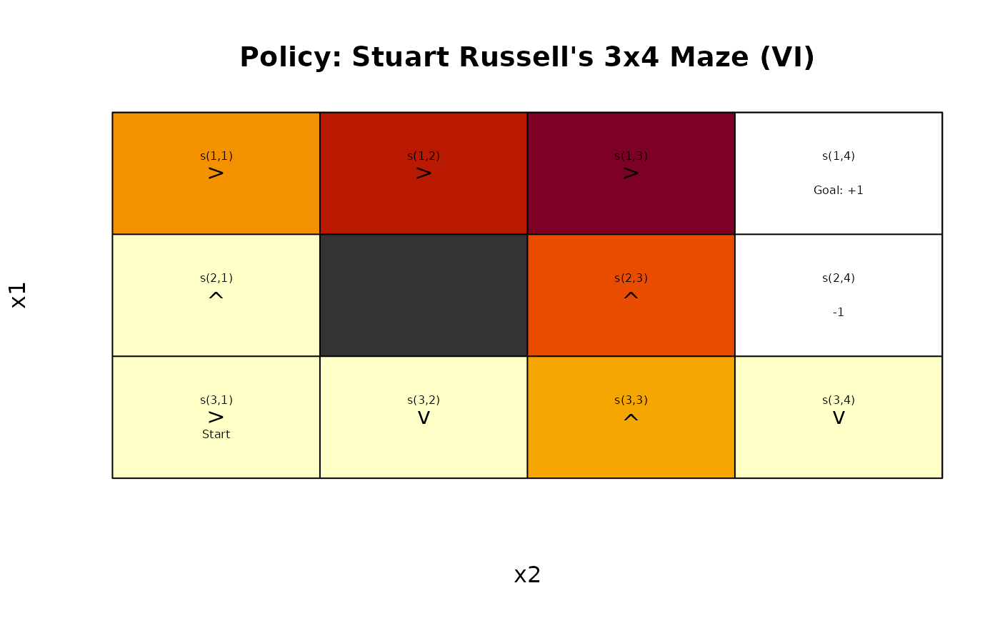
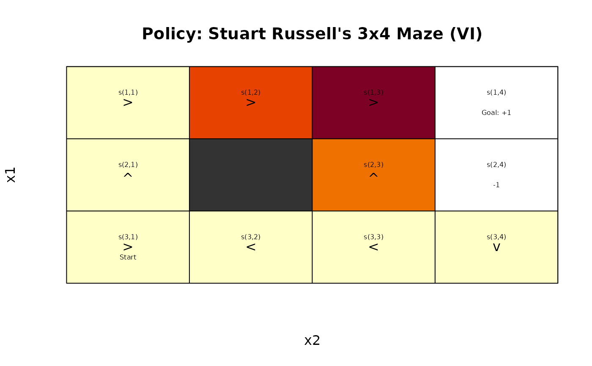
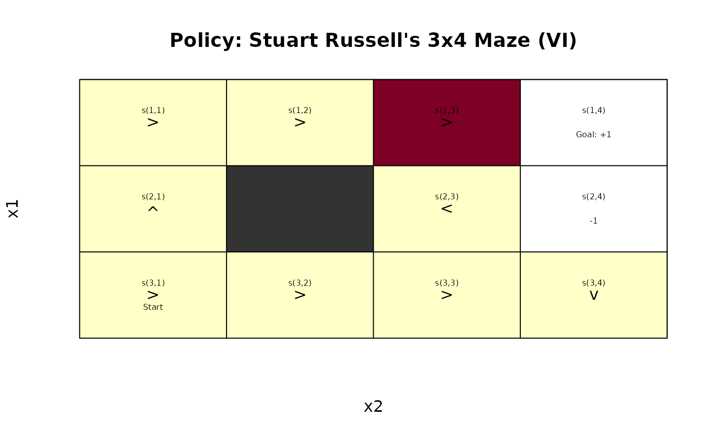

Solve MDPs via policy and value iteration.
Usage
solve_MDP_DP(
model,
method = "VI",
horizon = NULL,
discount = NULL,
n = 1000L,
error = 0.001,
k_backups = 10L,
V = NULL,
...,
matrix = TRUE,
continue = FALSE,
verbose = FALSE,
progress = TRUE
)Arguments
- model
an MDP problem specification.
- method
string; one of the following solution methods:
'VI'- value iteration'PI'- policy iteration'GenPS','PS_error','PS_random'- prioritized sweeping
- horizon
an integer with the number of epochs for problems with a finite planning horizon. If set to
Inf, the algorithm continues running iterations till it converges to the infinite horizon solution. IfNULL, then the horizon specified inmodelwill be used.- discount
discount factor in range \((0, 1]\). If
NULL, then the discount factor specified inmodelwill be used.- n
maximum number of iterations allowed to converge. If the maximum is reached then the non-converged solution is returned with a warning.
- error
value iteration: maximum Bellman error allowed for the convergence criterion.
- k_backups
policy iteration: maximum number of Bellman backups used in the iterative policy evaluation step. Policy evaluation typically converges earlier with a maximum Bellman error less than
error.- V
a vector with initial state values. If
NULL, then the default of a vector of all 0s (V_zero()) is used.- ...
further parameters are passed on to the solver function.
- matrix
logical; if
TRUEthen matrices for the transition model and the reward function are taken from the model first. This can be slow if functions need to be converted or do not fit into memory if the models are large. If these components are already matrices, then this is very fast. ForFALSE, the transition probabilities and the reward is extracted when needed. This is slower, but removes the time and memory requirements needed to calculate the matrices.- continue
logical; show a progress bar with estimated time for completion.
- verbose
logical or a numeric verbose level; if set to
TRUEor1, the function displays the used algorithm parameters and progress information. Levels>1provide more detailed solver output in the R console.- progress
logical; show a progress bar with estimated time for completion.
Value
solve_MDP() returns an object of class MDP or MDPSample which is a list with the
model specifications (model), the solution (solution).
The solution is a list with the elements that depend on the used method. Common
elements are:
methodwith the name of the used methodparameters used.
convergeddid the algorithm converge (NA) for finite-horizon problems.policya list representing the policy graph. The list only has one element for converged solutions.
Details
The following dynamic programming methods are implemented using the algorithms presented in Russell and Norvig (2010).
(Modified) Policy Iteration (Howard 1960; Puterman and Shin 1978) starts with a random policy and iteratively performs a sequence of
(Approximate) policy evaluation to estimate the value function for the current policy. Iterative policy evaluation can be approximated by stopping early after
k_backupsiterations (seepolicy_evaluation(). In this case the algorithm is called modified policy iteration.Policy improvement is performed by updating the policy to be greedy (see
greedy_policy()) with respect to the new value function. The algorithm stops when it converges to a stable policy (i.e., no changes between two iterations). Note that the policy typically stabilizes before the value function converges.
Value Iteration (Bellman 1957) starts with an arbitrary value function (by default all 0s) and iteratively updates the value function for each state using the Bellman update equation (see
bellman_update()).$$v(s) \leftarrow \max_{a \in \mathcal{A}(s)} \sum_{s'} p(s' | s,a) [r(s,a, s') + \gamma v(s')]$$
The iteration is terminated when the solution converges or the maximum of
niterations has been reached. Approximate convergence is achieved for discounted problems (with \(\gamma < 1\)) when the maximal value function change for any state \(\delta\) is $$\delta \le \frac{error (1-\gamma)}{\gamma}.$$ It can be shown that this means that no state value is more than \(error\) from the value in the optimal value function. For undiscounted problems, we use \(\delta \le error\).A greedy policy is extracted from the final value function. Value iteration can be seen as policy iteration with policy evaluation truncated to one step.
Prioritized Sweeping (Moore and Atkeson, 1993; Andre et al., 1997; Li and Littman, 2008) approximate the optimal value function by iteratively adjusting one state at a time. While value and policy iteration sweep in every iteration through all states, prioritized sweeping updates states in the order given by their priority. The priority reflects how much a state value may change given the most recently updated other states that can be directly reached via an action. This update order often lead to faster convergence compared to sweeping the whole state space in regular value iteration.
We implement the two priority update strategies described as PS and GenPS by Li and Littman (2008).
PS (Moore and Atkeson, 1993) updates the priority of a state \(H(s)\) using: $$ \forall{s \in \mathcal{S}}: H_{t+1}(s) \leftarrow \begin{cases} \max(H_{t}(s), \Delta_t \max_{a \in \mathcal{A}}(p(s_t|s,a)) \text{ for } s \ne s_{t+1} \\ \Delta_t \max_{a \in A}(p(s_t|s,a) \text{ for } s = s_{t+1} \end{cases} $$
where \(\Delta_t = |V_{t+1}(s_t) - V_t(s_t)| = |E(s_t; V_{t+1})|\), i.e., the Bellman error for the updated state.
GenPS (Andre et al., 1997) updates all state priorities using their current Bellman error:
$$\forall{s \in \mathcal{S}}: H_{t+1}(s) \leftarrow |E(s; V_{t+1})|$$
where \(E(s; V_{t+1}) = \max_{a \in A} \left[R(s,a) + \gamma \sum_{s \in S} p(s'|s,a) V(s')\right] - V(s)\) is a state's Bellman error.
The update method can be chosen using the additional parameter
H_updateas the character string"PS_random","PS_error"or"GenPS". The default isH_update = "GenPS". For PS, random means that the priority vector is initialized with random values (larger than 0), and error means they are initialized with the Bellman error as in GenPS. However, this requires one complete sweep over all states.This implementation stops updating when the largest priority values over all states is less than the specified
error.Since the algorithm does not sweep through the whole state space for each iteration,
nis converted into an equivalent number of state updates \(n = n\ |S|\).
References
Andre, D., Friedman, N., and Parr, R. 1997. "Generalized prioritized sweeping." In Advances in Neural Information Processing Systems 10, pp. 1001-1007. NeurIPS Proceedings
Bellman, Richard. 1957. "A Markovian Decision Process." Indiana University Mathematics Journal 6: 679-84. https://www.jstor.org/stable/24900506.
Howard, R. A. 1960. "Dynamic Programming and Markov Processes." Cambridge, MA: MIT Press.
Li, Lihong, and Michael Littman. 2008. "Prioritized Sweeping Converges to the Optimal Value Function." DCS-TR-631. Rutgers University. doi:10.7282/T3TX3JSX
Moore, Andrew, and C. G. Atkeson. 1993. "Prioritized Sweeping: Reinforcement Learning with Less Data and Less Real Time." Machine Learning 13 (1): 103–30. doi:10.1007/BF00993104 .
Puterman, Martin L., and Moon Chirl Shin. 1978. "Modified Policy Iteration Algorithms for Discounted Markov Decision Problems." Management Science 24: 1127-37. doi:10.1287/mnsc.24.11.1127 .
Russell, Stuart J., and Peter Norvig. 2020. Artificial Intelligence: A Modern Approach (4th Edition). Pearson. http://aima.cs.berkeley.edu/.
Examples
data(Maze)
maze_solved <- solve_MDP(Maze, method = "DP:VI", verbose = TRUE)
#> Precomputing matrices for R and T ... done.
#> Running value iteration (infinite horizon)
#> error for convergence: 0.001
#> n (max iterations): 1000
#> Initial V (first 20 max):
#> s(1,1) s(2,1) s(3,1) s(1,2) s(3,2) s(1,3) s(2,3) s(3,3) s(1,4) s(2,4) s(3,4)
#> 0 0 0 0 0 0 0 0 0 0 0
#>
#> Terminated at iteration: 19
policy(maze_solved)
#> state V action
#> 1 s(1,1) 0.8115564 right
#> 2 s(2,1) 0.7615521 up
#> 3 s(3,1) 0.7052527 up
#> 4 s(1,2) 0.8678082 right
#> 5 s(3,2) 0.6551492 left
#> 6 s(1,3) 0.9178082 right
#> 7 s(2,3) 0.6602740 up
#> 8 s(3,3) 0.6110843 left
#> 9 s(1,4) 0.0000000 up
#> 10 s(2,4) 0.0000000 right
#> 11 s(3,4) 0.3872455 left
# use prioritized sweeping (which is known to be fast for mazes)
maze_solved <- solve_MDP(Maze, method = "DP:GenPS", verbose = TRUE)
#> Precomputing matrices for R and T ... done.
#> Running prioritized sweeping
#> H_update: GenPS
#> error for convergence: 0.001
#> n (max updates): 11000
#> Initial V (first 20 max):
#> [1] -0.04 -0.04 -0.04 -0.04 -0.04 0.76 -0.04 -0.04 0.00 0.00 -0.04
#>
#> State updates performed: 89 (equivalent to 8.09 complete sweeps)
#> Converged: TRUE
policy(maze_solved)
#> state V action
#> 1 s(1,1) 0.8104998 right
#> 2 s(2,1) 0.7600309 up
#> 3 s(3,1) 0.7030110 up
#> 4 s(1,2) 0.8672276 right
#> 5 s(3,2) 0.6522679 left
#> 6 s(1,3) 0.9174998 right
#> 7 s(2,3) 0.6598484 up
#> 8 s(3,3) 0.6083265 left
#> 9 s(1,4) 0.0000000 down
#> 10 s(2,4) 0.0000000 right
#> 11 s(3,4) 0.3848524 left
# finite horizon
maze_solved <- solve_MDP(Maze, method = "DP:VI", horizon = 3)
policy(maze_solved)
#> [[1]]
#> state V action
#> 1 s(1,1) 0.3920 right
#> 2 s(2,1) -0.1200 up
#> 3 s(3,1) -0.1200 right
#> 4 s(1,2) 0.7376 right
#> 5 s(3,2) -0.1200 down
#> 6 s(1,3) 0.8896 right
#> 7 s(2,3) 0.5720 up
#> 8 s(3,3) 0.3152 up
#> 9 s(1,4) 0.0000 up
#> 10 s(2,4) 0.0000 up
#> 11 s(3,4) -0.1200 down
#>
#> [[2]]
#> state V action
#> 1 s(1,1) -0.080 right
#> 2 s(2,1) -0.080 up
#> 3 s(3,1) -0.080 right
#> 4 s(1,2) 0.560 right
#> 5 s(3,2) -0.080 left
#> 6 s(1,3) 0.832 right
#> 7 s(2,3) 0.464 up
#> 8 s(3,3) -0.080 left
#> 9 s(1,4) 0.000 up
#> 10 s(2,4) 0.000 up
#> 11 s(3,4) -0.080 down
#>
#> [[3]]
#> state V action
#> 1 s(1,1) -0.04 right
#> 2 s(2,1) -0.04 up
#> 3 s(3,1) -0.04 right
#> 4 s(1,2) -0.04 right
#> 5 s(3,2) -0.04 right
#> 6 s(1,3) 0.76 right
#> 7 s(2,3) -0.04 left
#> 8 s(3,3) -0.04 right
#> 9 s(1,4) 0.00 left
#> 10 s(2,4) 0.00 up
#> 11 s(3,4) -0.04 down
#>
gw_plot(maze_solved, epoch = 1)

gw_plot(maze_solved, epoch = 2)

gw_plot(maze_solved, epoch = 3)
